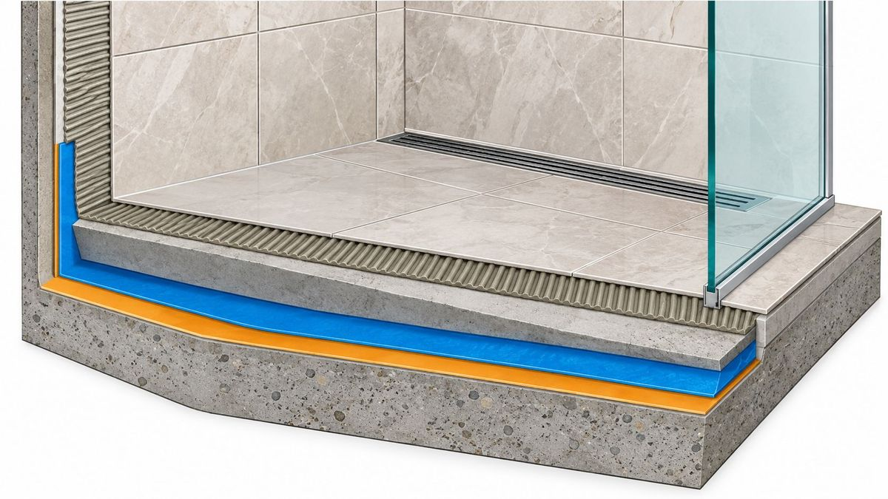

строительный душевой поддон — это плитка по стяжке с уклоном 1,5–2 % к трапу, два слоя гидроизоляции и бортик 30–50 мм. Размер 900×900 мм — минимум, комфорт — 1000×1000 или 1200×800. Работа с материалами — 45 000–120 000 руб. Экономия на уклоне или гидроизоляции даёт стоячую воду и протечку к соседям через 6–18 месяцев.
Что такое строительное исполнение
| Вариант | Высота порога | Цена | Особенность |
|---|---|---|---|
| Готовый акриловый поддон | 150–200 мм | 12 000–40 000 руб. | быстро, но «пластик» и шум при наступании |
| Поддон из плитки на кирпиче | 100–150 мм | 35 000–70 000 руб. | вровень с полом, требует каркаса |
| Душ «в пол» с трапом | 0–30 мм | 55 000–120 000 руб. | сложная гидроизоляция и уклон |
| Готовая душевая кабина | поддон + стены | 40 000–150 000 руб. | монтаж за день, но габариты фиксированы |
Строительное исполнение выбирают ради ровного пола без порога и единой плитки со стенами. Цена — сложность гидроизоляции: ошибка видна не сразу, а через сезон у соседей снизу.
Размеры и уклоны

| Параметр | Значение | Комментарий |
|---|---|---|
| Минимальный размер | 900×900 мм | меньше — тесно и вода льётся мимо |
| Комфортный размер | 1000×1000 мм | свободно моется взрослый человек |
| Уклон к трапу | 1,5–2 % (15–20 мм/м) | меньше 1 % — вода стоит |
| Бортик по краю | 30–50 мм | задерживает воду при засоре |
| Высота порога | 0–30 мм | выше 30 мм — спотыкание |
| Ширина входа | 600–700 мм | уже 550 мм — неудобно |
Уклон делают четырьмя плоскостями к трапу или одной к линейному трапу у стены. Линейный трап проще в укладке: уклон в одну сторону 1,5 % и нет «конверта» из четырёх треугольников.
Гидроизоляция и трап
| Элемент | Норма | Цена |
|---|---|---|
| Обмазочная мембрана | 2 слоя, 1,5–2 мм сухого слоя | 250–600 руб./кг |
| Лента в углах | 100–120 мм, по всему периметру | 100–200 руб./м |
| Фланец трапа | с прижимным кольцом | 800–2 500 руб. |
| Трап с сухим затвором | пропуск 0,8–1,2 л/с | 2 500–9 000 руб. |
| Заход на стены | 1 800–2 000 мм в душевой зоне | — |
Трап с сухим затвором обязателен: обычный гидрозатвор пересыхает за 2–3 недели без использования, и в санузел идёт запах канализации. Мембранный затвор держит запах без воды.
Плитка и швы
| Зона | Формат | Шов | Коэффициент трения |
|---|---|---|---|
| Пол душа | 300×300 или мозаика 100×100 | 2–3 мм | R10–R11 |
| Стены | 600×600 или 600×1200 | 2 мм | — |
| Бортик | 300×600 | 2 мм | R10 |
Крупный формат 600×600 на полу душа с уклоном укладывать сложно: плитка «ломается» на плоскостях. Мозаика 100×100 повторяет уклон без подрезки и даёт лучший сцеп с ногой.
Стекло и фурнитура
- Закалённое стекло 8 мм — 6 000–14 000 руб. за створку 900×2000 мм.
- Петли и профиль — 3 000–9 000 руб., крепление в стену через усиленную закладную.
- Антибликовое покрытие — плюс 1 500–3 000 руб., меньше разводов.
- Створка без порога — с каплесборником и магнитом, иначе вода идёт на пол.
Вентиляция и свет в душевой
| Элемент | Норма | Цена |
|---|---|---|
| Вытяжной вентилятор | 60–90 м³/ч на санузел | 2 500–8 000 руб. |
| Приток через решётку в двери | сечение 200 см² | 500–1 500 руб. |
| Светильник IP44 | 300–400 лк в зоне душа | 1 500–5 000 руб. |
| Подсветка ниши | LED-лента IP65 | 1 000–3 000 руб. |
Без вытяжки 60–90 м³/ч влажность после душа держится 70–80 % два-три часа, и конденсат оседает на швах и стекле. Вентилятор с датчиком влажности стоит на 1 500–3 000 руб. дороже, но включается сам.
Линейный трап у стены удобнее точечного: уклон в одну сторону 1,5 %, плитка ложится целыми рядами без «конверта», а решётка закрывает стык стены и пола. Минус — цена: 6 000–18 000 руб. против 2 500–9 000 руб. за точечный, и обязательная ревизия для чистки.
Порядок работ
- Разметить контур душа и место трапа с учётом лаг и стояка.
- Смонтировать трап и подводку, залить стяжку с уклоном 1,5–2 %.
- Прогрунтовать основание, нанести первый слой мембраны.
- Наклеить ленту в углах и вокруг трапа, нанести второй слой.
- Выдержать 24 часа и провести испытание водой на 24 часа.
- Уложить плитку на клей, затереть эпоксидной или цементной затиркой.
- Установить стекло на закладные, проверить герметичность примыканий.
Смета 2026
| Позиция | Душ 1000×1000 | Стоимость |
|---|---|---|
| Трап с сухим затвором | 1 шт. | 2 500–9 000 руб. |
| Стяжка с уклоном | 1 м² | 3 000–6 000 руб. |
| Гидроизоляция 2 слоя | 4–5 м² | 5 000–12 000 руб. |
| Плитка и мозаика | 5–6 м² | 8 000–25 000 руб. |
| Стекло 8 мм с фурнитурой | 1 створка | 9 000–23 000 руб. |
| Работа | — | 18 000–45 000 руб. |
Итого 45 500–120 000 руб. Готовый акриловый поддон с экраном обойдётся в 20 000–50 000 руб., но порог 150–200 мм и звук при наступании останутся.
Ошибки и их цена
| Ошибка | Последствие | Исправление |
|---|---|---|
| Уклон меньше 1 % | вода стоит у трапа | переделка стяжки 15 000–35 000 руб. |
| Один слой мембраны | протечка через 1–2 года | вскрытие плитки 30 000–70 000 руб. |
| Обычный трап без сухого затвора | запах канализации | замена трапа 5 000–12 000 руб. |
| Гладкая плитка R9 | скользкий пол | замена плитки или противоскользящее покрытие |
Чек-лист перед стяжкой
- Трап смонтирован и выставлен по уровню.
- Уклон 1,5–2 % проверен правилом и уровнем.
- Два слоя мембраны и лента в углах.
- Испытание водой 24 часа пройдено.
- Плитка пола с коэффициентом трения R10–R11.
Частые вопросы
Можно ли сделать душ в пол без порога?
Можно, если перекрытие позволяет опустить трап на 60–80 мм. В панельном доме чаще делают порог 20–30 мм или поднимают пол на 50–70 мм.
Какой уклон нужен к трапу?
1,5–2 % (15–20 мм на метр). При 1 % вода уходит медленно и оставляет разводы, при 3 % неудобно стоять.
Чем затирать швы в душевой?
Эпоксидной затиркой: она не впитывает воду и не темнеет. Цементная служит 3–5 лет, потом требует замены.
Нужен ли бортик, если есть стекло?
Да, 30–50 мм по краю поддона: стекло не герметично внизу, и при засоре вода идёт через край.
Сколько сохнет гидроизоляция перед плиткой?
24–48 часов при +20 °C. Плитку кладут после полного высыхания, иначе мембрана не наберёт прочность.
Можно ли положить душ на деревянный пол?
Только с усилением лаг и жёстким основанием из фанеры 18–20 мм в два слоя, плюс гидроизоляция. Проще и надёжнее — плита по грунту или бетонное перекрытие.
Нужен ли тёплый пол в душевой?
Желателен: плитка на полу без подогрева сохнет 2–3 часа, с подогревом — 30–40 минут. Кабель 10–12 Вт/м², терморегулятор с датчиком в стяжке.
Что делать, если вода всё равно стоит?
Проверить уклон правилом и уровень: чаще всего стяжка «села» на 3–5 мм. Исправляют самовыравнивающейся смесью с новым уклоном, плитку при этом снимают.